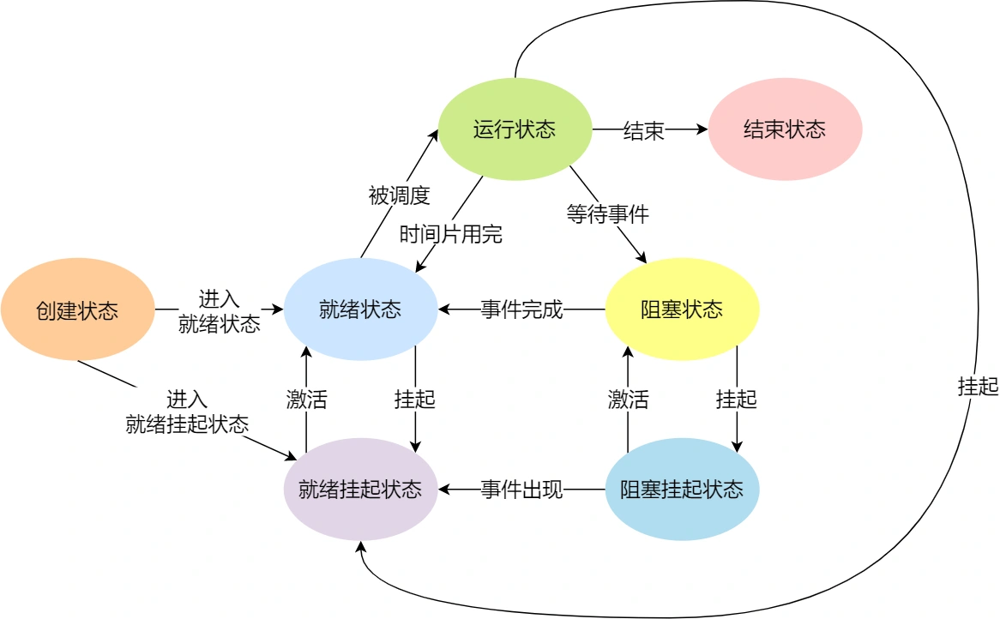
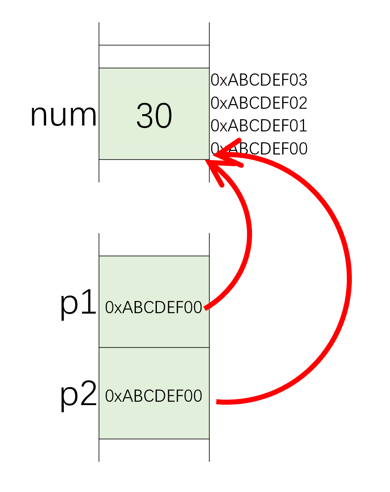

C++面向对象（一）运算符重载
第五章 运算符重载
限制条件
只能重载存在的运算法
重载运算符必须保留相同操作数数量和优先级
成员或全局函数
单目运算符应该做成成员函数
= （） []只能做成成员函数
只能重载存在的运算法
重载运算符必须保留相同操作数数量和优先级
单目运算符应该做成成员函数
= （） []只能做成成员函数
将函数声明为inline可以避免函数调用的开销，空间换时间
调用函数步骤：
只能在当前文件访问，其他文件不能通过extern访问
定义时创建，程序结束时销毁，修改了生命周期，作用域不变
static对象的构造在main函数前执行，析构在main函数结束后
存在于所有对象且保持一致，可在其他文件访问
传输层：进程到进程
网络层：端到端（end to end），网络设备到网络设备
数据链路层：点到点（point to point）
物理层：数字信号与物理信号的转换

UdpClient
from socket import *
serverName = "hostname"
severPort = 12000
clientSocket = socket(AF_INET,SOCK_DGRAM) # ipv4,udp
message = "Hello World"
clientSocket.sendto(message.encode(),(serverName,severPort))
modifiedMessage,serverAddress = clientSocket.recvfrom(2048)
print(modifiedMessage.decode)
clientSocket.close()Udpserver
传输层向应用层提供的服务为socket API
简化本主机应用层向传输层发送的非有效信息，通过socket代表一组信息
TCP socket包含源IP，源端口，目标IP，目标端口，连接状态
UDP socket包含源IP，源端口
可靠的、保序的传输：TCP
不可靠、不保序的传输：UDP
网络：由节点和边组成的结构
计算机网络：由主机节点（主机）和数据交换结点（数据的转发，如路由器交换机）构成的网络，边称为数据链路。
还可分为网络边缘（主机），网络核心（数据交换），接入（连接网络边缘和网络核心）
P2P（peer）：分布式处理，客户端也可以是服务端
运行中的程序（区别于未运行的静态程序），需要有数据结构保存当前运行的信息（PCB），便于切换不同进程

操作系统切换进程（宏观）
例子为进程运行到磁盘读写操作后与其他进程的切换
模版函数（template function）为声明不是定义，在使用时根据输入类型定义
使用模版时，不会使用隐式类型转换
类模版里的每个函数都是函数模版，需要在声明前加上template
| 类型 | 含义 | 最小尺寸 |
|---|---|---|
| bool | 布尔 | 未定义 |
| char | 字符 | 8位 |
| short | 短整型 | 16位 |
| int | 整型 | 16位 |
| long | 长整型 | 32位 |
| long long | 长整型 | 64位 |
| float | 单精度浮点数 | 6位有效数字 |
| double | 双精度浮点数 | 10位有效数字 |
| long double | 扩展精度浮点数 | 10位有效数字 |
int值时，int会被转换为无符号数变量声明（declaration）定义了变量的类型和名字，定义（definition）在声明外还申请存储空间
如果只想声明，可在变量名前添加关键字extern
读写string对象
string s;
cin >> s; //from empty to empty
getline(cin,s); //one line, stop by ENTER
当把string对象和字符（串）字面值混在一条语句时，必须确保加法运算符（+）两侧的运算对象至少一个是string
vector是模板而非类型
指针是一个变量，其存储的是值的地址，而不是值本身
使用常规变量时，值是指定的量，而地址是派生量，而指针相反
OOP强调的是在运行阶段（而不是编译阶段）进行决策，提供了灵活性，对于内存管理也更加高效
int* ptr_a;
double* ptr_b;初始化时必须指定所指元素类型，因为对所有指针来说其都是代表一个初始地址，但从该初始地址读多少字节则由指针类型判断
指针也是作为变量存储，只不过其内存空间存的是地址。指针p1,p2有各自的地址&p1,&p2。长度为4B（32位）或8B（64位）。p1,p2表示存储的所指向元素的地址。*p1表示指向元素的值。

在C++中创建指针时，计算机将分配用来存储地址的内存，但不会分配用来存储指针所指向的数据的内存（指向不确定）。另外，一定要在对指针提取（*）之前，将指针初始化为一个确定的、适当的地址。
const对象一经创建后其值不能再改变，所以const对象必须初始化
const int i = 1;默认情况下，const对象仅在文件内有效。若需在不同文件使用同一const对象，则const变量不管是声明还是定义都添加extern关键字，这样只需定义一次就可以了
extern const int bufSize;用于声明引用的const都是底层const，引用本身已默认为顶层const（无法改变指向）
const型变量只能由const型引用（底层const）
后置递增运算符的优先级高于解引用运算符，因此*p++等同于*（p++）
将p+1后返回p的初始值
endl将与设备关联的缓冲区（buffer）中的内容刷到设备中。在调试时应保证"一直"刷新流。否则若程序崩溃，输出可能还是缓冲区，导致对于程序崩溃位置的错误推断
读取数量不定的输入数据可用while (std::in >> value)
当遇到文件结束符（end-of-file），或遇到一个无效输入时，istream对象状态变为无效，使条件为假
EOF：在Windows中为Ctrl+Z，UNIX为Ctrl+D
有些话小时候听不明白，长大后却会反复想起。
“以后少读读”就是这样一句话。
记得小学阅读课上，我在读一本悬疑小说并写到了读后感作业中，结果第二天就被老师批评，并以“开卷有益”这个成语来教导我说，你这种书以后少读读。
当时，我就觉得老师这种说法一定是错的，但限于那时的表达能力和逻辑能力并不能给出完整的反驳，现写下此文以表述自己的想法。
在上学的时候，老师总会在班会课上让学霸分享经验，但真正按照他们的方法学下来也没什么用，而且他们说的还有很多矛盾，比方说：
根本就不知道该听谁的。 大学毕业后工作了几年，也遇到了很多优秀的人。原本以为在沟通中很难跟上大佬的思路。但接触下来发现他们平时也嘻嘻哈哈的，和普通人没什么两样。但是他们看上去不用费太多精力就能把事情做好。 我就在想，该怎么变得和他们一样优秀？怎么样去提高自己的学习能力？ 每天去上班的路上我都在想这个事情，奇怪的是我好像从来没有思考过这个问题。在上学的时候，我关心的往往是题目，只想着怎么去把题目做对，但从来没有去反思过学习过程有没有问题。在应试教育下，我好像失去了一些思考的能力，每天按部就班得完成老师布置的作业，没有去关注过学习这件事本身。 就这样，我来来回回思考了一星期，得到的都是些模糊的印象，比如说要定期复习，上课认真听讲。然而这都是些感性认识，并不能成体系得去表达学习过程。这时，我接触到了两本书，《学习的逻辑》 和《认知觉醒》，看完后让我对它有了不一样的认识。
先聊聊视频开头提到的学习经验问题，为什么学霸的学习经验往往都没有用。
这可能是因为他们自己都不清楚自己做对了哪些事，可能课前预习或者看剧学英语也有用，但那并不是学习的本质。就好像在说一个成绩优秀的人每天都会吃一个苹果，并不是说吃苹果就会提高成绩，而是人家本来就优秀，和吃什么水果没有关系。
在读完两本书后，我能想到的改进方法是要执行可量化的学习流程，通过指标来评估学习情况，比方说数学的几何模块每个部分的准确率是多少，有没有达到目标，而不仅仅是掌握得一般这种模糊表达。因为只有定量得了解自己的学习情况，才能对薄弱点进行优化。
我会把学习流程分为三个阶段：准备阶段，学习阶段和复盘阶段。
这个阶段的核心是明确方向并规划路径。